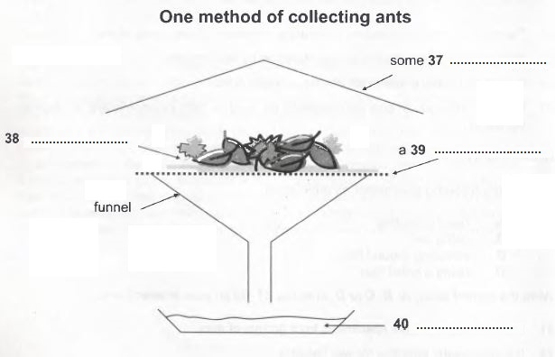

Collecting Ant Specimens
Collecting ants can be as simple as picking up stray ones and placing them in a glass jar, or as complicated as completing an exhaustive survey of all species present in an area and estimating their relative abundances. The exact method used will depend on the final purpose of the collections. For taxonomy. or classification, long series, from a single nest, which contain all castes (workers, including majors and minors, and, if present, queens and males) are desirable, to allow the determination of variation within species. For ecological studies, the most important factor is collecting identifiable samples of as many of the different species present as possible. Unfortunately, these methods are not always compatible. The taxonomist sometimes overlooks whole species in favour of those groups currently under study, while the ecologist often collects only a limited number of specimens of each species, thus reducing their value for taxonomic investigations.
To collect as wide a range of species as possible, several methods must be used. These include hand collecting, using baits to attract the ants, ground litter sampling, and the use of pitfall traps. Hand collecting consists of searching for ants everywhere they are likely to occur. This includes on the ground, under rocks, logs or other objects on the ground, in rotten wood on the ground or on trees, in vegetation, on tree trunks and under bark. When possible, collections should be made from nests or foraging columns and at least 20 to 25 individuals collected. This will ensure that all individuals are of the same species, and so increase their value for detailed studies. Since some species are largely nocturnal. collecting should not be confined to daytime. Specimens are collected using an aspirator (often called a poorer), forceps, a fine, moistened paint brush, or fingers. if the ants are known not to sting. Individual insects are placed in plastic or glass tubes (1.5-3.0 ml capacity for small ants, 5-8 ml for larger ants) containing 75% to 95% ethanol. Plastic tubes with secure tops are better than glass because they are lighter, and do not break as easily if mishandled.
Baits can be used to attract and concentrate foragers. This often increases the number of individuals collected and attracts species that are otherwise elusive. Sugars and meats or oils will attract different species and a range should be utilised. These baits can be placed either on the ground or on the trunks of trees or large shrubs. When placed on the ground, baits should be situated on small paper cards or other flat, light-coloured surfaces, or in test-tubes or vials. This makes it easier to spot ants and to capture them before they can escape into the surrounding leaf litter.
Many ants are small and forage primarily in the layer of leaves and other debris on the ground. Collecting these species by hand can be difficult. One of the most successful ways to collect them is to gather the leaf litter in which they are foraging and extract the ants from it. This is most commonly done by placing leaf litter on a screen over a large funnel, often under some heat. As the leaf litter dries from above, ants (and other animals) move downward and eventually fall out the bottom and are collected in alcohol placed below the funnel. This method works especially well in rain forests and marshy areas. A method of improving the cajch when using a funnel is to sift the leaf litter through a coarse screen before placing it above the funnel. This will concentrate the litter and remove larger leaves and twigs. It will also allow more litter to be sampled when using a limited number of funnels.
The pitfall trap is another commonly used tool for collecting ants. A pitfall trap can be any small container placed in the ground with the top level with the surrounding surface and filled with a preservative. Ants are collected when they fall into the trap while foraging. The diameter of the traps can vary from about 18 mm to 10 cm and the number used can vary from a few to several hundred. The size of the traps used is influenced largely by personal preference (although larger sizes are generally better), while the number will be determined by the study being undertaken. The preservative used is usually ethylene glycol or propylene glycol, as alcohol will evaporate quickly and the traps will dry out. One advantage of pitfall traps is that they can be used to collect over a period of time with minimal maintenance and intervention. One disadvantage is that some species are not collected as they either avoid the traps or do not commonly encounter them while foraging.
Questions 27-30
Do the following statements agree with the information given in Reading Passage 118?
In boxes 27-30 on your answer sheet, write
TRUE if the statement agrees with the information
FALSE if the statement contradicts the information
NOT GIVEN if there is no information on this
27. Taxonomic research involves comparing members of one group of ants.
28. New species of ant are frequently identified by taxonomists.
29. Range is the key criterion for ecological collections.
30. A single collection of ants can generally be used for both taxonomic and ecological purposes.
Questions 31-36
Classify the following statements as referring to
A. hand collecting
B. using bait
C. sampling ground litter
D. using a pitfall trap
Write the correct letter, A, B, C or D, in boxes 31-36 on your answer sheet.
31. It is preferable to take specimens from groups of ants.
32. It is particularly effective for wet habitats.
33. It is a good method for species which are hard to find.
34. Little time and effort is required.
35. Separate containers are used for individual specimens.
36. Non-alcoholic preservative should be used.
Questions 37-40
Label the diagram below.
Choose NO MORE THAN TWO WORDS from the passage for each answer.
Write your answers in boxes 37-40 on your answer sheet.

Answer:
27 TRUE
28 NOT GIVEN
29 TRUE
30 FALSE
31 A
32 C
33 B
34 D
35 A
36 D
37 heat
38 leaf litter
39 screen
40 alcohol